03 · 书籍、卡片、票据、地图与印刷纸品 (Books, Maps, Cards & Printed Matter)
| 单词 (英 / 法性数完整形态) | 音标 (英 / 法 IPA) | 中文释义 | 英文定义 (WordNet) | 词频 | 实物配图 |
|---|---|---|---|---|---|
| sketch pad复合词le comprimén.m.🇬🇧 sketch pad | /sketʃ pæd//kɔ̃pʁime/ | 速写本 | a book containing sheets of paper on which sketches can be drawn | 3.76 | 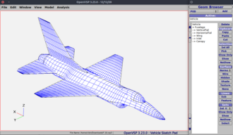 |
| notebookle bloc-noten.m.🇬🇧 notebook | /'nәutbuk//blɔk nɔt/ | n. 笔记本, 手册, 期票簿 | a book with blank pages for recording notes or memoranda | 3.74 | 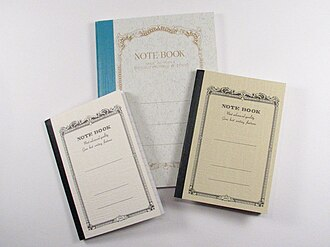 |
| coloring book复合词la livre de coloriagen.f.🇬🇧 coloring book | /'kʌlәriŋ buk//livʁ də kɔlɔʁjaʒ/ | 儿童彩色画册 | a picture book with line drawings intended to be colored with crayons by children | 3.58 | 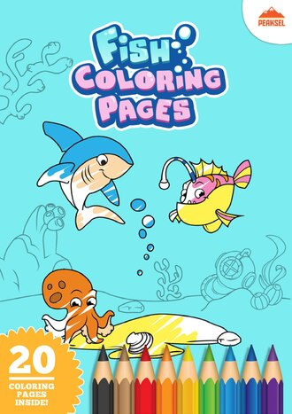 |
| autograph album复合词le liber amicorumn.m.🇬🇧 autograph album | /ˈɔ:təˌgræf ˈælbəm//lib amikoʁym/ | n. 亲笔签名簿; 纪念册 | an album for autographs | 3.48 | 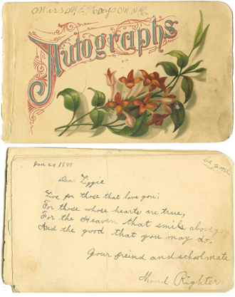 |
| commonplace book复合词la livren.f.🇬🇧 commonplace book | /ˈkɔmənpleis buk//livʁ/ | n. 摘录簿 | a notebook in which you enter memorabilia | 3.41 | 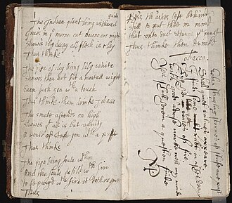 |
| contour map复合词l'isoplèthen.f.🇬🇧 contour map | /'kɒntuә mæp//izoplɛ/ | 等高线地图；[计] 等值线图 | a map having contour lines through points of equal elevation | 3.35 | 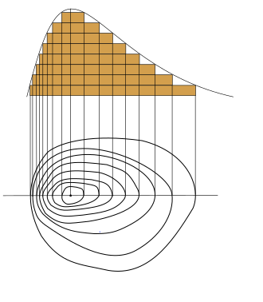 |
| hardcover兼类词le hardcovern.m.🇬🇧 hardcover | /'hɑ:dkʌvә//aʁdkov/ | n. 硬封面的书, 精装书 | a book with cardboard or cloth or leather covers | 3.32 |  |
| playbookle playbookn.m.🇬🇧 playbook | /plaibook/ | n. 剧本, 剧本集 | a notebook containing descriptions and diagrams of the plays that a team has practiced (especially an American football team) | 3.29 | |
| picture book复合词l'album illustrén.m.🇬🇧 picture book | /ˈpiktʃə buk//albɔm ilystʁe/ | n. 图画书 | a book consisting chiefly of pictures | 3.24 | 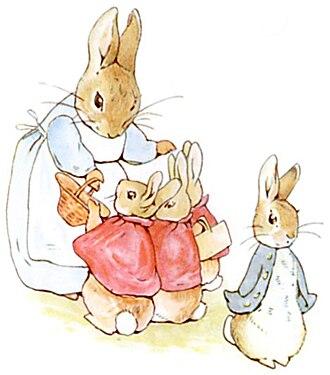 |
| sketch map复合词la carten.f.🇬🇧 sketch map | /sketʃ mæp//kaʁt/ | 草图, 示意图 | a map drawn from observation (rather than from exact measurements) and representing the main features of an area | 3.24 | 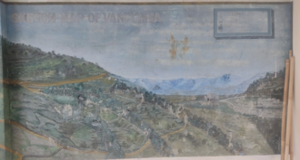 |
| photograph album复合词l'album photon.m.🇬🇧 photograph album | /'fәutәgrɑ:f 'ælbәm//albɔm fɔto/ | 影集 | an album for photographs | 3.2 | 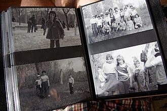 |
| pilot chart复合词la graphiquen.f.🇬🇧 pilot chart | /ˈpailət tʃɑ:t//gʁafik/ | 引航（海）图 | a chart for a navigator showing the prevailing meteorological and hydrographic and navigational conditions | 3.2 | 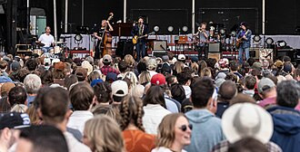 |
| pocket book复合词le calepinn.m.🇬🇧 pocket book | /ˈpɔkit buk//kalpɛ̃/ | n. 小笔记簿, 袖珍普及本 | pocket-sized paperback book | 3.2 | 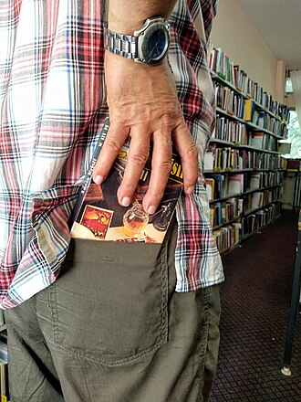 |
| pocket edition复合词le calepinn.m.🇬🇧 pocket edition | /'pɒkit i'diʃәn//kalpɛ̃/ | 袖珍本, 小型物 | pocket-sized paperback book | 3.2 | |
| relief map复合词la carten.f.🇬🇧 relief map | /ri'li:f mæp//kaʁt/ | 地势图 | a map having contour lines through points of equal elevation | 3.2 | 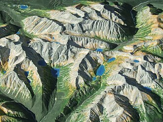 |
| sketch block复合词le blocn.m.🇬🇧 sketch block | /sketʃ blɔk//blɔk/ | n. 写生簿 | a book containing sheets of paper on which sketches can be drawn | 3.2 | 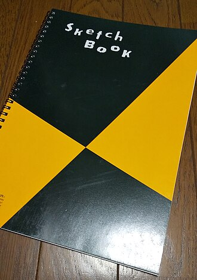 |
| stamp album复合词l'album de timbresn.m.🇬🇧 stamp album | /stæmp ˈælbəm//albɔm də tɛ̃bʁ/ | n. 集邮册 | an album for stamps | 3.2 | 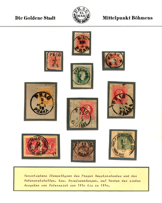 |
| weather chart复合词la carte météorologiquen.f.🇬🇧 weather chart | /ˈweðə tʃɑ:t//kaʁt meteɔʁɔlɔʒik/ | n. 气象图; 天气图 | (meteorology) a map showing the principal meteorological elements at a given time and over an extended region | 3.2 | 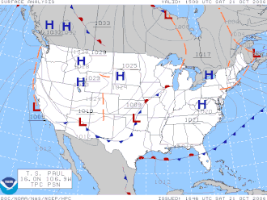 |
| weather map复合词la carten.f.🇬🇧 weather map | /'weðә mæp//kaʁt/ | 天气图 | (meteorology) a map showing the principal meteorological elements at a given time and over an extended region | 3.2 |  |
| wind rose复合词la rose des ventsn.f.🇬🇧 wind rose | /wind rəuz//ʁoz de vɑ̃/ | 风向频率图, 风向风速图, 风向玫瑰图; 风玫瑰; 风图 | weather map showing the frequency and strength of winds from different directions | 3.2 | 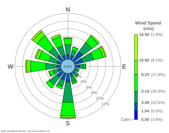 |
| platle platn.m.🇬🇧 plat | /plæt//pla/ | n. 小块地, 地图 | a map showing planned or actual features of an area (streets and building lots etc.) | 3.1 | 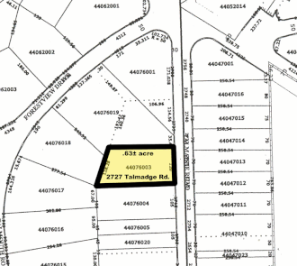 |
| scrapbookle scrapbookn.m.🇬🇧 scrapbook | /'skræpbuk//skʁapbook/ | n. 剪贴簿 | an album into which clippings or notes or pictures can be pasted | 2.93 | 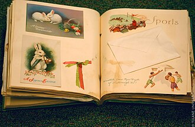 |
| hardback兼类词la reliure occidentalen.f.🇬🇧 hardback | /'hɑ:dbæk//ʁəljyʁ ɔksidɑ̃tal/ | n. 精装本 | a book with cardboard or cloth or leather covers | 2.8 |  |
| sketchbookle carnet de croquisn.m.🇬🇧 sketchbook | /sketʃˌbʊk//kaʁnɛ də kʁɔki/ | n. 写生簿, 素描簿, 短文集, 随笔集 | a book containing sheets of paper on which sketches can be drawn | 2.78 | 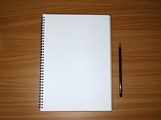 |